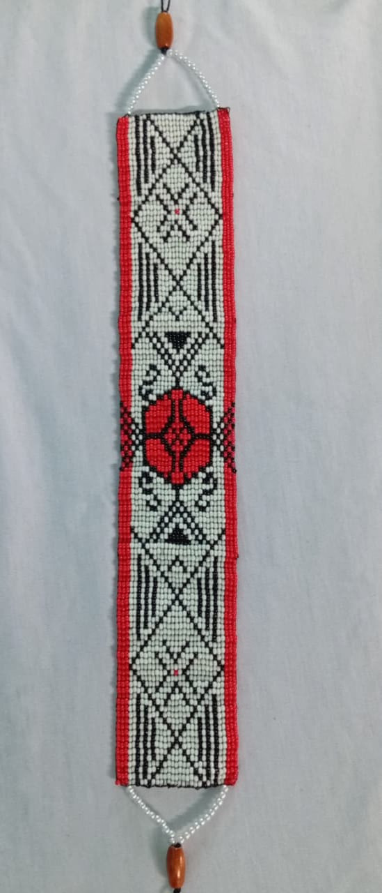
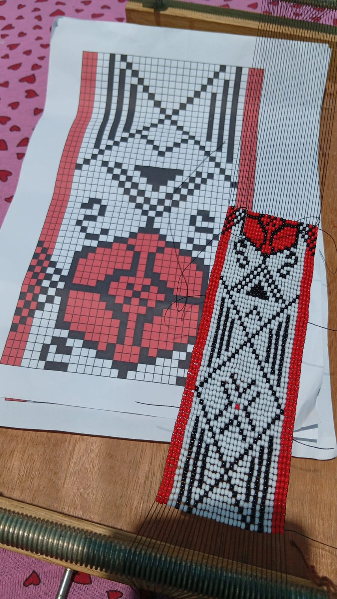

Etnia Kambeba
Agricultura
O plantio entre o povo Kambeba baseia-se em conhecimentos tradicionais transmitidos entre gerações. Culturas como mandioca, macaxeira, banana, abacaxi, milho e melancia são organizadas na roça considerando o tempo de crescimento e o espaçamento entre as plantas.
Para definir essas distâncias, utilizam-se frequentemente medidas corporais, como passos e braços, que servem como referência prática no planejamento do plantio e podem ser relacionadas a conceitos matemáticos como medidas e organização do espaço.
Mandioca e Macaxeira
No cultivo da mandioca e da macaxeira, o espaçamento entre as plantas é medido utilizando passos longos, geralmente cerca de três passos entre cada muda. O tempo de colheita costuma variar entre 1 e 2 anos.
Aplicação matemática
Espaçamento aproximado: 3 passos (≈ 3 metros)
Tempo de colheita: 1 a 2 anos
Exemplo:
Se um terreno possui 30 metros de comprimento e cada planta necessita de 3 metros de espaço, podemos calcular:
30 ÷ 3 = 10 pés por fileira
Se o plantio possuir 5 fileiras:
10 × 5 = 50 pés de mandioca
Se cada pé produzir aproximadamente 4 kg de mandioca:
50 × 4 = 200 kg de mandioca
Banana
No cultivo da banana, a medida do espaçamento pode ser feita utilizando o comprimento do braço como referência. O tempo de colheita geralmente varia entre 9 meses e 1 ano.
Aplicação matemática
Tempo de colheita: 9 meses a 1 ano
Exemplo:
Se forem plantados 20 pés de banana e cada pé produzir 1 cacho com 15 bananas, podemos calcular:
20 × 15 = 300 bananas
Milho
O plantio do milho costuma utilizar um passo curto como medida de espaçamento entre as plantas. O tempo de colheita varia entre 4 e 6 meses.
Aplicação matemática
Espaçamento aproximado: 1 passo curto (≈ 1 metro)
Tempo de colheita: 4 a 6 meses
Exemplo:
Se um terreno possui 20 metros de comprimento:
20 ÷ 1 = 20 pés por fileira
Se forem plantadas 4 fileiras:
20 × 4 = 80 pés de milho
Se cada pé produzir 2 espigas:
80 × 2 = 160 espigas
Abacaxi
O cultivo do abacaxi também faz parte das plantações da roça Kambeba. O tempo de colheita costuma variar entre 1 e 2 anos.
Aplicação matemática
Exemplo:
Se forem plantados 40 pés de abacaxi e cada pé produzir 1 fruto:
40 × 1 = 40 abacaxis
Se cada abacaxi pesar aproximadamente 2 kg:
40 × 2 = 80 kg de abacaxi
Melancia
O espaçamento no plantio da melancia pode variar entre 1 e 4 passos, dependendo do espaço disponível e do crescimento da planta. O tempo de colheita costuma ocorrer entre 2 e 3 meses.
Aplicação matemática
Espaçamento aproximado: 2 passos (exemplo)
Tempo de colheita: 2 a 3 meses
Exemplo:
Se um terreno possui 24 metros de comprimento:
24 ÷ 2 = 12 pés por fileira
Se houver 3 fileiras:
12 × 3 = 36 pés de melancia
Se cada pé produzir 2 melancias:
36 × 2 = 72 melancias
Artesanato
O artesanato do povo Kambeba inclui diferentes técnicas tradicionais, entre elas o trabalho com miçangas em tecido no tear. Nesse processo, muitas vezes é utilizado um gráfico ou desenho como guia, que orienta a organização das cores e dos padrões durante a confecção da peça.
Esses padrões revelam relações com conceitos matemáticos, como contagem, formas geométricas e simetria, presentes na organização visual do artesanato.


Na peça representada, o padrão do desenho possui:
- 38 miçangas de largura
- 62 miçangas de comprimento
Para calcular a quantidade total necessária para preencher toda a área do desenho, podemos utilizar o cálculo da área de um retângulo:
A = base × altura
A = 38 × 62
A = 2.356
Assim, seriam necessárias 2.356 miçangas para completar todo o padrão.
O padrão representado no artesanato apresenta diferentes formas geométricas, como:
- Losango
- Triângulo isósceles
- Hexágono
Essas formas são organizadas de maneira repetitiva, formando padrões visuais característicos do artesanato.
Eixo de simetria vertical
A imagem apresenta um eixo de simetria vertical, localizado no centro do desenho.
Largura do padrão: 38
Para encontrar o ponto central:
X = 38 ÷ 2
X = 19
Isso significa que o eixo de simetria está na posição 19, indicando que os elementos localizados à esquerda possuem reflexo correspondente à direita.
Eixo de simetria horizontal
Também é possível observar um eixo de simetria horizontal no padrão.
Altura do padrão: 62
Para encontrar o ponto central:
Y = 62 ÷ 2
Y = 31
Assim, a parte superior do desenho apresenta um reflexo correspondente na parte inferior, formando um padrão simétrico.